卯年 | Year of the Rabbit
作品の一言
2023年は、卯年でした。
このうさぎたちは、魔法に溢れています。新年のために、お友達にあげました。うさぎと一緒に、カードも配りました。お願いを書けば、きっとうさぎから魔法をもらえると書きました。
「魔法に溢れる卯年になりますように。」
うさぎの色と魔法に関係あります。
- 🖤 黒うさぎ - あなたの悩みを食べてくれます
- 🤍 白うさぎ - あなたの可能性を無限に広げます
- 💙 青いうさぎ - あなたの勉学を支えます
- 💚 緑うさぎ -あなたの健康を良くします
- 🧡 オレンジうさぎ -あなたの情熱を祈ります
- 💜 紫うさぎ -あなたの金運をアップさせます
- 🩶 透明なうさぎ -あなたの新しい挑戦を支えます
- 🩷 ピンクのうさぎ -あなたの人間関係を改善します
2023 was the Year of the Rabbit.
I made these rabbits to hold magic and gave these to friends with a wish—for them to write their wish to the rabbits on the included card and the rabbit will grant their wish.
"May your new year be full of magic."
Each of the rabbit's magic is unique to its color.
- 🖤 Black rabbit - Eating your fears and worries
- 🤍 White rabbit - Broadening your potential
- 💙 Blue rabbit - Helping you in studies
- 💚 Green rabbit - Keeping you healthy
- 🧡 Orange rabbit -Driving passion in your life
- 💜 Purple rabbit - Prosperity in finances
- 🩶 Clear rabbit - Help in taking on new challenges
- 🩷 Pink rabbit -Luck in love and relationships
作成年 | Year Made
2022年８月〜１２月
August~December of 2022
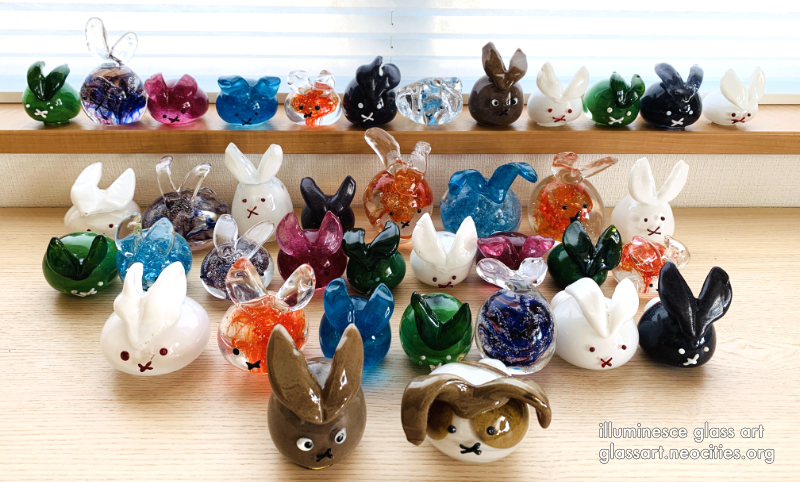
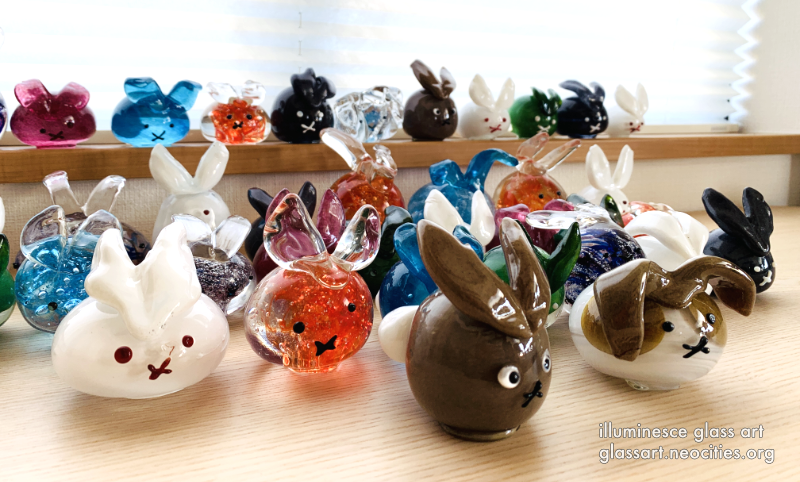
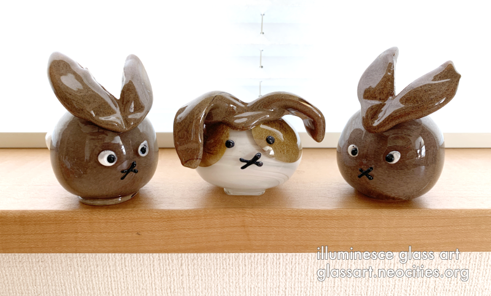
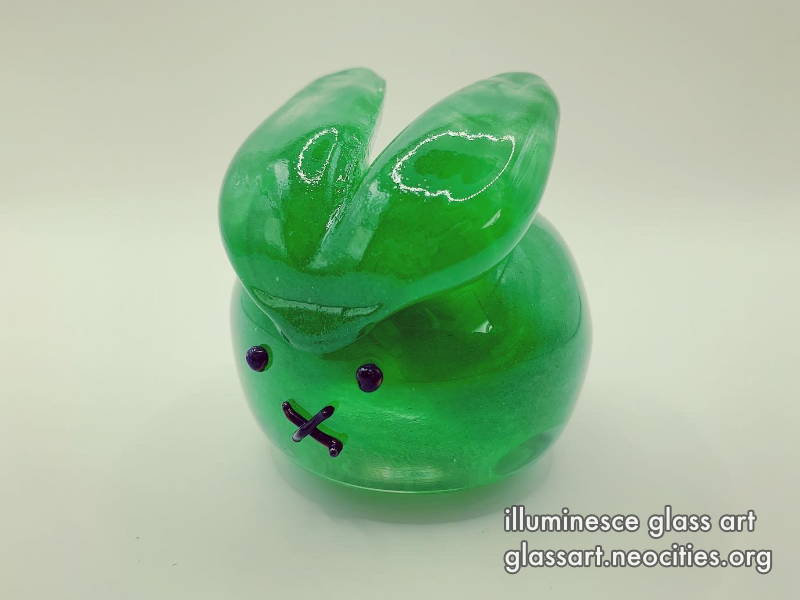
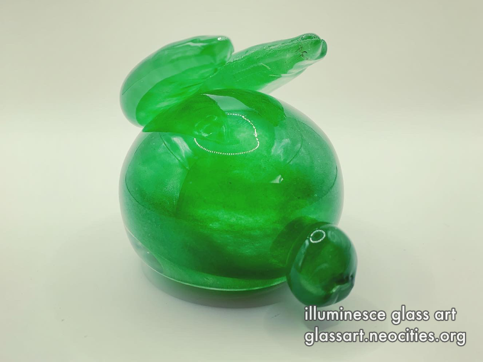
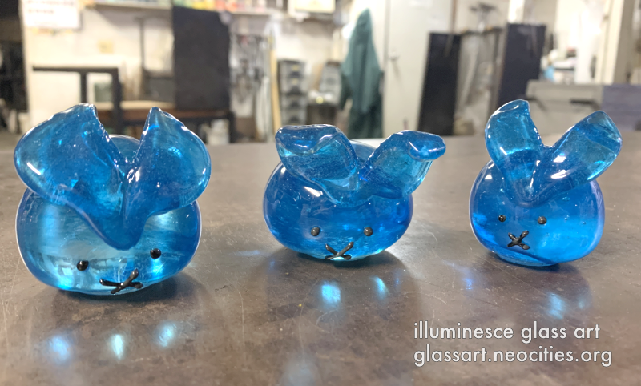
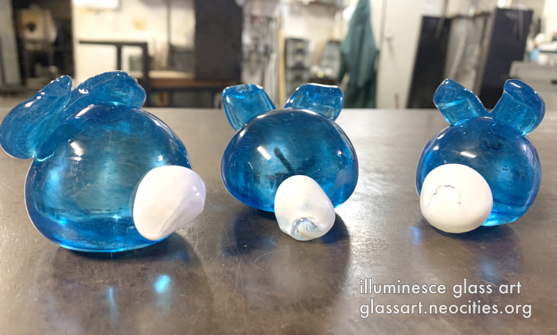
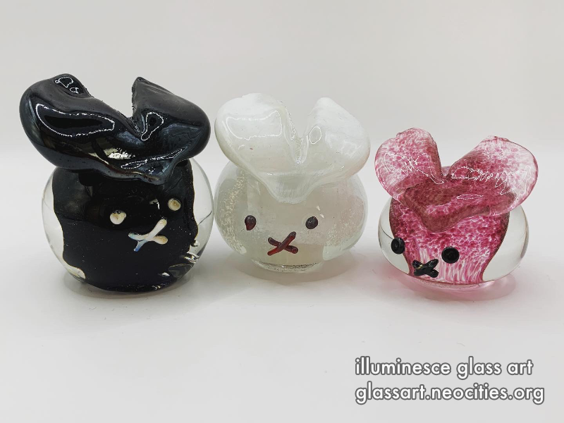
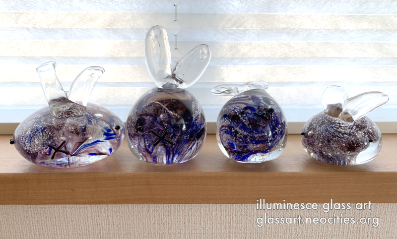
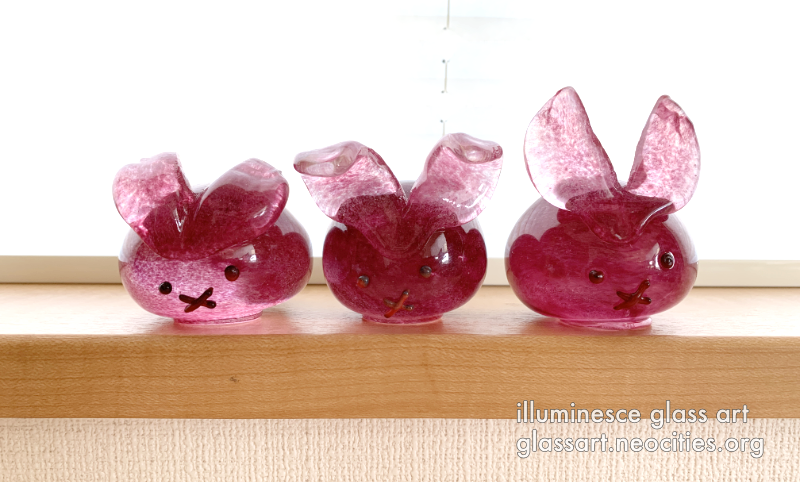

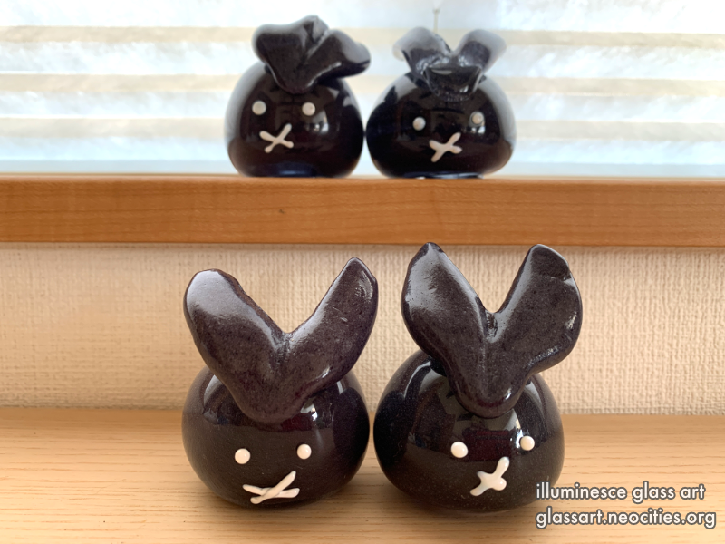
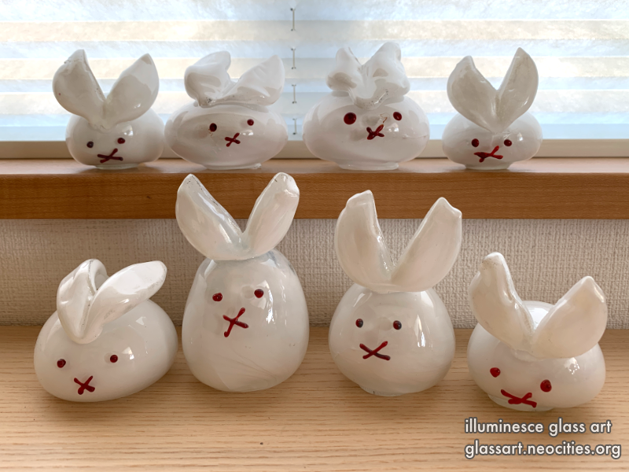
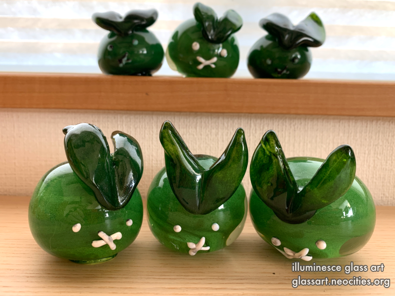

作業中 | In progress photos
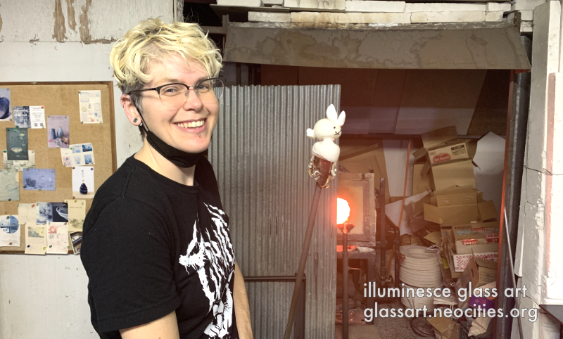
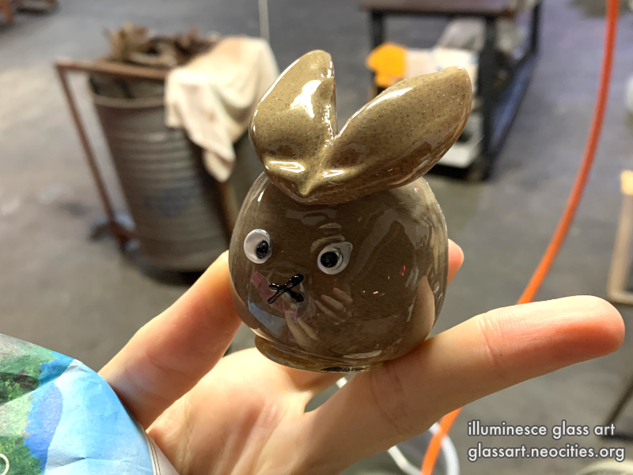
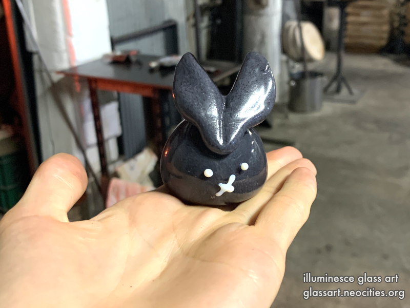
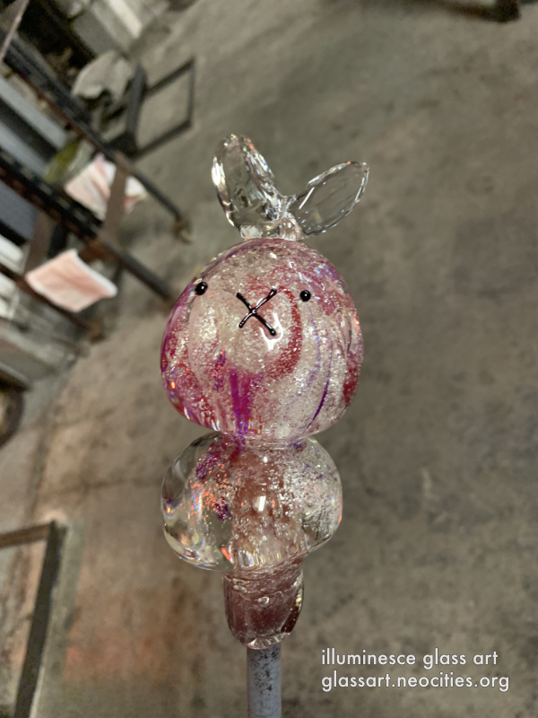
おまけ | For fun
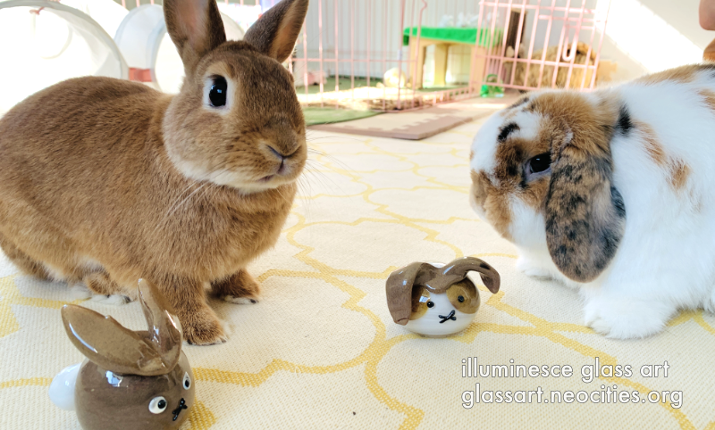